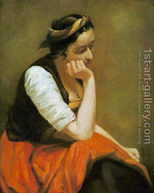

Ketubot 92 - Mind twisting problems
The Talmud first discusses a problem where our previous ruling is used for comparison and then continues with a series of problems, useful for training the mind.
Let us say a debtor D owes $1,000 to his creditor C. Meanwhile, he owns two houses, and he sells them both to the buyer B, each for $500.
Now C wants his money, and D still cannot pay, so C repossesses the first of the houses, because real estate always guarantees the loan. B loses one of the houses he bought, but he wants to keep the second one, so he comes with $1,000 cash to C and proposes the following: if C wants to consider the first house, the one he just repossessed, as worth a $1,000, then all is well; but if not, then this $1,000 should cover both houses, and C gets his money but loses the repossessed house.
Rami bar Chama wanted to say that this is exactly our previous rule: there the orphans were not able to artificially inflate the worth of their mother's Ketubah , so here too the argument of considering the $500 house worth $1,000 does not stand. Without this, the second part of the proposal does not stand either, and the creditor can collect the second house. However, Rava reversed him: in the case of orphans their suggestion would hurt the other group of children, but in our case the creditor would always get his $1,000 loan back.
Following cases are abbreviated with mnemonics ("thousand" - that is our case, "hundred," "mitzvah of Ketubah"...). Such abbreviations, or "signs," contain clues to the mystical meaning of the subjects discussed.
Art: A thinking girl by Jean-Baptiste-Camille Corot